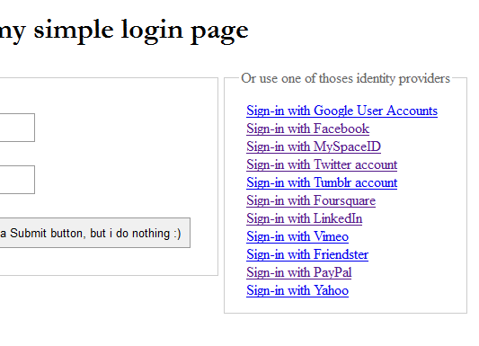

HybridAuth can be easly integrated on you existing website. All you have to do is to include hybridauth main file and to add a couple of lines to your login page like it's shown in the sample bellow.
This snippet will try to directly connect the user with Twitter and then grab his complete profile. In advanced integration you can even access the provider social api client to get or post status on twitter, grab followers list, etc...
Note: This script and more examples and demos can be found at /hybridauth/examples/ folder in the HybridAuth package.
Also a working demo is hosted at http://hauth.sx33.net/examples/, so check it out! (note within a note: this hosted demo can have some network availability issues since it's a hosted on a free hosting service).
<?php
# This script will try to directly sign-in the user with twitter.
# You can change "Twitter" IDp to whatever you want : Google, MySpace, Facebook, etc..
# start a new PHP session
session_start();
# include HybridAuth main file
include "/path/to/hybrid/library/hybridauth.php";
# create a new Hybrid_Auth instance
$hybridauth = new Hybrid_Auth();
# check for errors, if true we display the error message and rest evreything
if( $hybridauth->hasError() ){
echo "Ooops error: " . $hybridauth->getErrorMessage() ;
$hybridauth->expireStorage();
exit( 0 );
}
# if the user dont have a session (not logged in yet), try to signin it with twitter
if( ! $hybridauth->hasSession() ){
# setup the provider adapter object as twitter and try to login
$provider_adapter = $hybridauth->setup( "Twitter" );
$provider_adapter->login();
}
# else, if the user is already connected
else{
# reinit the provider adapter
$provider_adapter = $hybridauth->wakeup();
# grab the user data from the provider
$user_data = $provider_adapter->user();
# print the user profile
echo "User connected with <b>{$user_data->providerId}</b> as <b>{$user_data->profile->displayName}</b> : <hr /><pre>";
print_r( $user_data );
}
?>
User connected with Twitter as hybridAuth :
Hybrid_User Object ( [providerId] => Twitter [UID] => b5e95c3462e786ba709fd58c8bf76949 [providerUID] => 80359084 [timestamp] => 1307368526 [populated] => [profile] => Hybrid_User_Profile Object ( [webSiteURL] => http://hybridauth.sf.net [profileURL] => http://twitter.com/hybridAuth [photoURL] => http://a0.twimg.com/profile_images/480547080/twi_normal.gif [displayName] => HybridAuth [description] => HybridAuth, An Open Source Social-Sign-On PHP Library. #PHP #API #REST #OpenID #OAuth #SSO #Social [firstName] => Zachy [lastName] => [gender] => [language] => [age] => [birthDay] => [birthMonth] => [birthYear] => [email] => [phone] => [address] => [country] => [region] => [city] => [zip] => ) )
More examples and demos can be found at /hybridauth/examples/ folder:
| 1 - Simple authentication form  |
2 - Sign-in and Register new users (MySQL database needed) |
3 - Widget integration (Just a proof of concept) |
Home - Overview - User guide - Blog - Contact - Contribute - Licenses - Credits - Similar projects